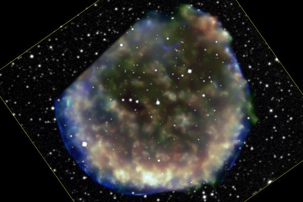
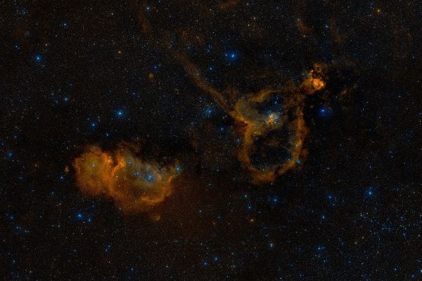

Латинское название: Cassiopeia
Кассиопея - жена эфиопского царя Кефея, правившего Ионной, мать Адромеды. Подробности едва не ставшей трагической истории - на странице Персеиды. Здесь же лишь отмечу, что, поскольку Кассиопея сыграла в этой истории самую злокозненную роль, Зевс поместил ее на небе, сидящей в корзине. Когда корзина в небесном движении переворачивается, Кассиопея барахтается в ней всем на посмешище!
А некоторые циничные хохмачи утверждают, что даже и не в корзине, а на гинекологическом кресле... Оставим это наблюдение на их совести.
Сверхновая 1572 года или сверхновая Тихо Браге. Этот датский астроном обнаружил и описал внезапное появление новой звезды в Кассиопее. В максимуме блеска она была ярче Венеры.
Сейчас мы знаем, что это была сверхновая - может быть, последняя из вспыхнувших в нашей Галактике. Расстояние до нее 7.500 световых лет. На месте вспышки, как это принято у сверхновых - расширяющееся облако выброшенного в пространство звездного материала. Сейчас его диаметр составляет около 20 световых лет.
IC 1848 и IC 1805 (иногда, соответственно, Душа и Сердце) - еще пара диффузных туманностей, сопровождаемых газо-пылевыми облаками и областями звездообразования. В IC 1848 находится одна из таких областей, W5, называемая также "Горы созидания" - очень эффектная на фотографиях.
